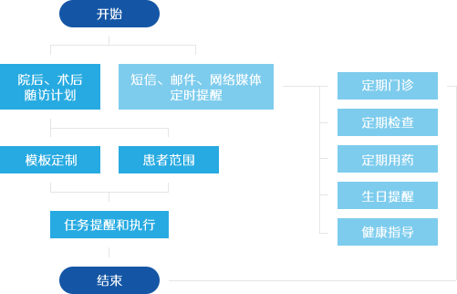

患者随访
医院随访系统，通过整合医院HIS数据，建立了患者与医院的有效沟通和反馈体系，推动了和谐的医患关系的建立。系统可以让医院随访人员有计划地对出院病人和门诊病人进行随访，了解患者的康复情况；也可以根据防疫和治疗的不同需求，对某些特殊病种病人进行具有针对性的跟踪随访，跟踪出院后的治疗效果，从而加强对病情的控制。 相关数据可以为医院各级管理人员提供整体医疗效果信息，为医院持续改进工作质量和科研工作的开展提供重要参考依据和数据支持。
业务流程图

系统功能
患者档案管理
支持从HIS中抽取和相关数据导入 支持档案合并，解决患者档案重复问题 可浏览患者基本信息、就诊记录、疾病记录、用药记录、检验记录和影像记录
患者档案管理
支持从HIS中抽取和相关数据导入 支持档案合并，解决患者档案重复问题 可浏览患者基本信息、就诊记录、疾病记录、用药记录、检验记录和影像记录
患者档案管理
支持从HIS中抽取和相关数据导入 支持档案合并，解决患者档案重复问题 可浏览患者基本信息、就诊记录、疾病记录、用药记录、检验记录和影像记录